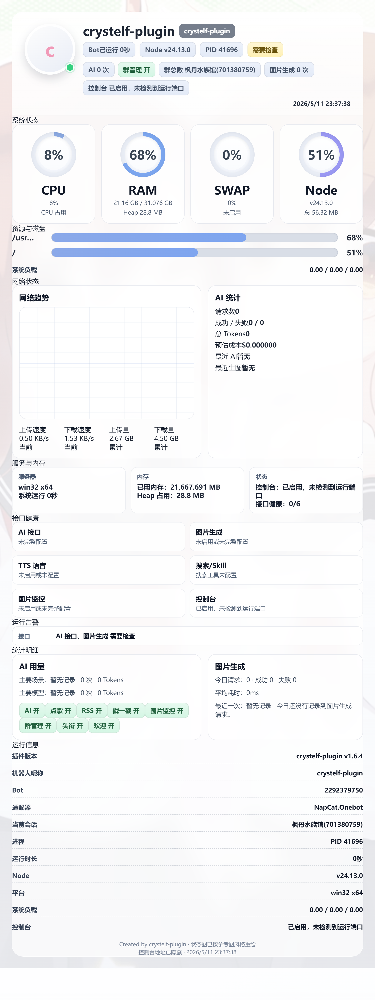
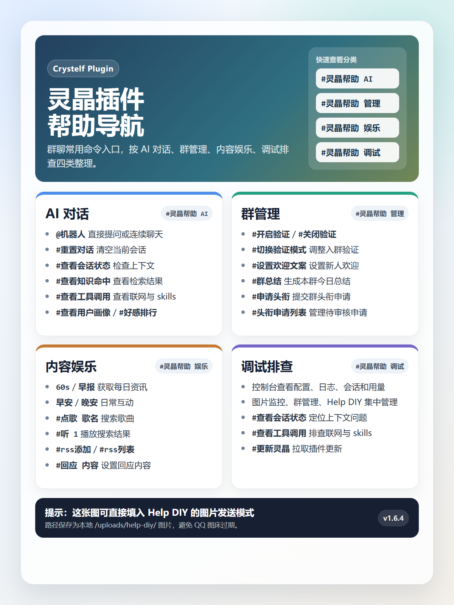

不用一开始就填完整 API，先确认 Bot、控制台和基础 AI 链路工作正常。
首次体验
内置公益接口
状态面板
#灵晶状态
群管理
#灵晶开启群管理
本地控制台
127.0.0.1:27891
Ready To Run
先跑起来，再慢慢精调
默认公益接口用于首次体验，能让新装插件先完成 AI 对话、帮助、状态图和控制台链路验证。稳定部署时，再切换到自己的接口和模型配置。
正式使用时进入 API 设置，把公益接口替换成自己的 OpenAI 兼容接口。
群管理、图片监控、自动处理等功能默认关闭，按群逐步开启更稳。
Web Console
魔丸控制台
登录鉴权、CSRF、同源校验、只读模式和敏感配置遮蔽都在控制台侧统一处理。日常配置优先走页面，减少直接改 JSON 的风险。
Daily Workflow
从配置到调试，一条线跑通
首次启动后先配置 API，再按群开启群管理；遇到问题可以用模拟调试复现场景，用日志排查定位错误，最后通过状态图确认运行情况。

#灵晶状态
展示 Bot 运行时间、插件版本、系统资源、AI 用量、生图用量和最近告警。控制台地址不会暴露在状态图中。

Help DIY
默认帮助图与自定义分类
支持文字帮助、图片帮助、分类页、导入导出和历史版本。群内使用 `#灵晶帮助` 即可查看。
QQ Simulator
类 QQ 群调试环境
模拟文本、图片、语音、截图、戳一戳、回复、@、CQ 码和 meme 消息段。用于调试，不会真的执行撤回、禁言、踢人等危险动作。
Install
安装与更新
在 Yunzai 根目录安装，重启 Bot 后会自动加载。插件自带公益初始接口，适合先跑通体验；正式长期使用建议在控制台换成自己的 API。更新控制台、群管理、模拟调试、图片监控等功能后建议重启 Bot。
Security Defaults
默认更保守
会影响群行为或涉及日志、接口、用户数据的能力都需要明确开启。公网使用控制台时，请使用强口令并限制访问来源。
FAQ